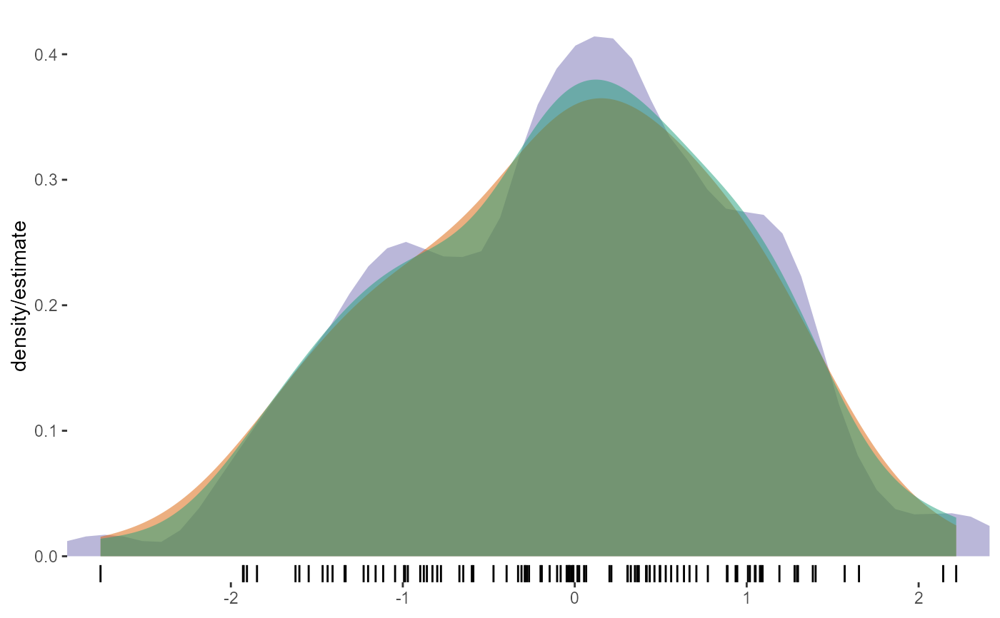

Compute and display a univariate averaged shifted histogram (polynomial kernel)
Source:R/geom_ash.r
stat_ash.RdUsage
stat_ash(mapping = NULL, data = NULL, geom = "area",
position = "stack", ab = NULL, nbin = 50, m = 5, kopt = c(2,
2), na.rm = FALSE, show.legend = NA, inherit.aes = TRUE, ...)Arguments
- mapping
Set of aesthetic mappings created by
aes()oraes_(). If specified andinherit.aes = TRUE(the default), it is combined with the default mapping at the top level of the plot. You must supplymappingif there is no plot mapping.- data
The data to be displayed in this layer. There are three options:
If
NULL, the default, the data is inherited from the plot data as specified in the call toggplot().A
data.frame, or other object, will override the plot data. All objects will be fortified to produce a data frame. Seefortify()for which variables will be created.A
functionwill be called with a single argument, the plot data. The return value must be adata.frame, and will be used as the layer data.- geom
Use to override the default Geom
- position
Position adjustment, either as a string, or the result of a call to a position adjustment function.
- ab
half-open interval for bins [a,b). If no value is specified, the range of x is stretched by
5%at each end and used the interval.- nbin
number of bins desired. Default
50.- m
integer smoothing parameter; Default
5.- kopt
vector of length 2 specifying the kernel, which is proportional to ( 1 - abs(i/m)^kopt(1) )i^kopt(2); (2,2)=biweight (default); (0,0)=uniform; (1,0)=triangle; (2,1)=Epanechnikov; (2,3)=triweight.
- na.rm
If
FALSE, the default, missing values are removed with a warning. IfTRUE, missing values are silently removed.- show.legend
logical. Should this layer be included in the legends?
NA, the default, includes if any aesthetics are mapped.FALSEnever includes, andTRUEalways includes. It can also be a named logical vector to finely select the aesthetics to display.- inherit.aes
If
FALSE, overrides the default aesthetics, rather than combining with them. This is most useful for helper functions that define both data and aesthetics and shouldn't inherit behaviour from the default plot specification, e.g.borders().- ...
Other arguments passed on to
layer(). These are often aesthetics, used to set an aesthetic to a fixed value, likecolour = "red"orsize = 3. They may also be parameters to the paired geom/stat.

Aesthetics
geom_ash understands the following aesthetics (required aesthetics
are in bold):
xalphacolorfilllinetypesize
References
David Scott (1992), "Multivariate Density Estimation,"
John Wiley, (chapter 5 in particular).
B. W. Silverman (1986), "Density Estimation for Statistics
and Data Analysis," Chapman & Hall.
Examples
# compare
library(gridExtra)
#> Warning: package 'gridExtra' was built under R version 4.2.2
set.seed(1492)
dat <- data.frame(x=rnorm(100))
grid.arrange(ggplot(dat, aes(x)) + stat_ash(),
ggplot(dat, aes(x)) + stat_bkde(),
ggplot(dat, aes(x)) + stat_density(),
nrow=3)
#> Estimate nonzero outside interval ab.
#> Bandwidth not specified. Using '0.43', via KernSmooth::dpik.
cols <- RColorBrewer::brewer.pal(3, "Dark2")
ggplot(dat, aes(x)) +
stat_ash(alpha=1/2, fill=cols[3]) +
stat_bkde(alpha=1/2, fill=cols[2]) +
stat_density(alpha=1/2, fill=cols[1]) +
geom_rug() +
labs(x=NULL, y="density/estimate") +
scale_x_continuous(expand=c(0,0)) +
theme_bw() +
theme(panel.grid=element_blank()) +
theme(panel.border=element_blank())
#> Estimate nonzero outside interval ab.
#> Bandwidth not specified. Using '0.43', via KernSmooth::dpik.
